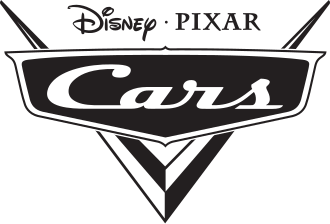

Cars ist ein Animationsfilm von Pixar aus dem Jahr 2006. Es ist der erste Film, an dem John Lasseter seit Toy Story 2 (1999) wieder als Regisseur und nicht nur als Produzent mitgearbeitet hat. Offizieller Kinostart in Deutschland war der 7. September 2006.
In Cars sind alle Akteure Autos, die sich wie Menschen bzw. Tiere benehmen. Menschen kommen im Film nicht vor. Am 28. Juli 2011[3] erschien in Deutschland die Fortsetzung des Filmes, Cars 2. Darüber hinaus entstanden zwischen 2008 und 2011 unter dem Titel Cars Toon – Hooks unglaubliche Geschichten eine Reihe von computeranimierten Kurzgeschichten, die im Stil des Films gehalten sind und zum Teil als Vorfilm zu anderen Pixarproduktionen im Kino und im Fernsehen zu sehen waren bzw. sind. Der dritte Teil der Filmreihe kam 2017 unter dem Titel Cars 3: Evolution in die Kinos.[4]